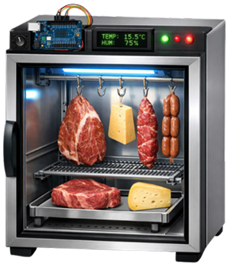

Controle Preciso
Algoritmos PID garantem a estabilidade microclimática necessária para o desenvolvimento seguro de culturas complexas.
O MatureBox democratiza a arte da maturação. Controle temperatura e umidade com precisão algorítmica através de hardware open-source de baixo custo. Transforme ingredientes comuns em experiências culinárias extraordinárias.
Construída com componentes de prateleira, o MatureBox oferece desempenho profissional por uma fração do custo de equipamentos comerciais.
Algoritmos PID garantem a estabilidade microclimática necessária para o desenvolvimento seguro de culturas complexas.
Baseado em microcontroladores acessíveis. Adapte, melhore e compartilhe suas modificações com a comunidade.
Acompanhe seus projetos de qualquer lugar. Receba alertas se as condições saírem dos parâmetros ideais.

Construa sua própria câmara com nosso guia passo-a-passo. A lista de materiais é otimizada para custo-benefício sem comprometer a segurança alimentar.